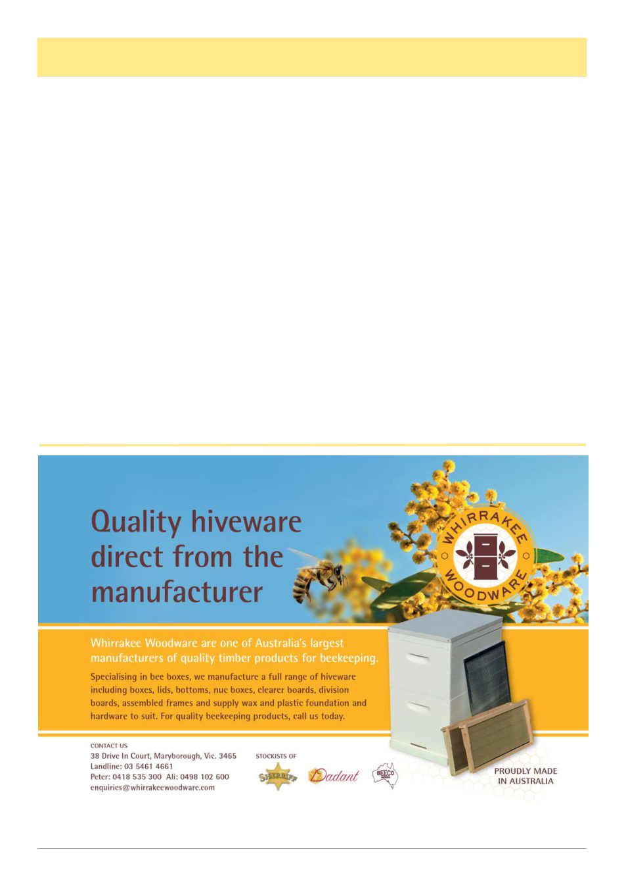

July 2026
23
Beekeeping In Cuba, cont’d
(Continued on page 24)
spread use of Bayvarol and other treatments in the first
10 years, but it does appear that import quantities and
availability of the miticides never did allow constant
miticide coverage, and people did gradually realize that
they didn’t need to do these treatments. As well they
were supported by a number of state run breeding sta-
tions and bee researchers that really dwarfs what we
have available here in Victoria and maybe even Austral-
ia on a whole.
I was additionally puzzled to see the studies showing
a high degree of hygienic behavior from relatively early
in their varroa experience, it seemed to me maybe they
just got lucky with bees that from the start handled var-
roa very well. Then it occurred to me that the other
places held up as miracles of resistance, Hawaii and
Fernando de Noronha island are also in the tropics, and
tropical South America and Africa also don’t have prob-
lems with varroa (attributed to Africanized and African
bees, respectively), and I couldn’t find anything about
Varroa destructor being particularly devastating in trop-
ical Asia, not that could be teased out from compound-
ing effects such as Tropilaelaps. Varroa has lower heat
tolerance than Apis mellifera and the specific lineages
that jump host are native to northern temperate China,
Korea, Japan and Vladivostok. It’s devastating south-
ern Queensland right now but has not yet reached the
tropical part, it’s possible varroa just doesn’t do well in
the tropics.
There’s a lot of unknowns and I don’t presume to
know all the answers, all I can really say after reading a
huge number of Cuban articles on Varroa is that they
did use treatments initially, and they’ve been supported
by exponentially more local research and state spon-
sored breeding support than we could ever dream of.
References
1 Rodríguez Luis, A., et al. (2022) “Recapping and
mite removal behaviour in Cuba: home to the world’s
largest population of Varroa-resistant European honey-
bees.” Scientific Reports, 12, 15597.
2 Bande, J. (2000) “Contribución al estudio de la his-
toria de la apicultura en Cuba, introducción de la abeja
en
la
isla.”
Apiciencia,
2(1),
p02102,
https://
apiciencia.edicionescervantes.com/index.php/
apiciencia/article/view/225.
3 Crane, E. (1999) The World History of Beekeeping
and Honey Hunting. Routledge.
4 Pérez, A., et al. (2009) “Determinación del estatus
racial y parasitológico (varroosis) de colmenas (Apis
mellifera L.) ante la amenaza de africanización.”
Apiciencia,
11(3),
p11302,
https://
apiciencia.edicionescervantes.com/index.php/
apiciencia/article/view/276.
5 Demedio, J., et al. (2009) “El registro de productos
para el control de la varroosis de la abeja melífera en
(Continued from page 22)